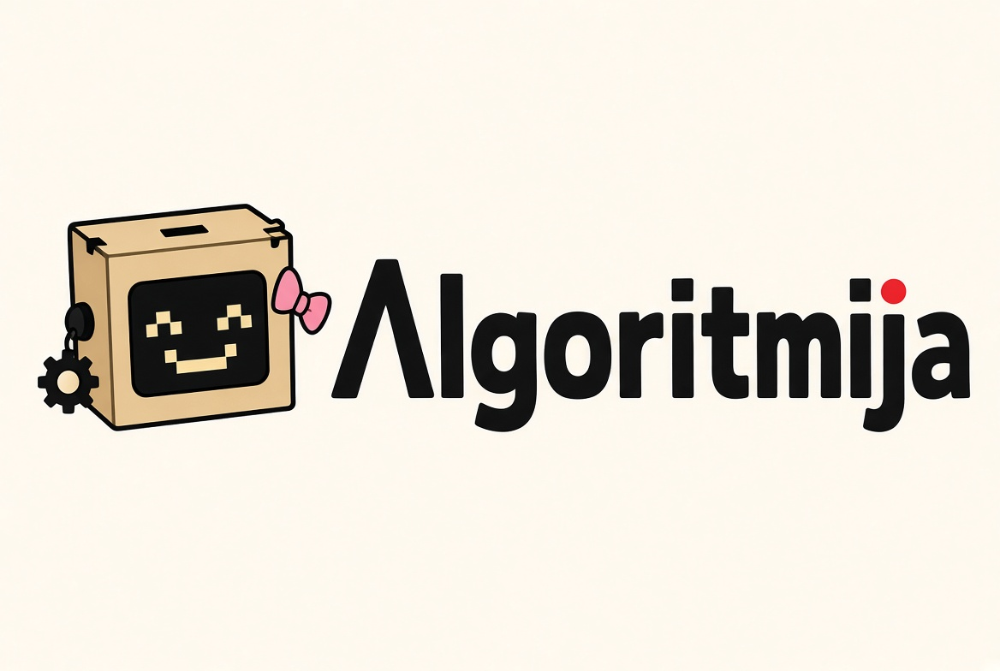
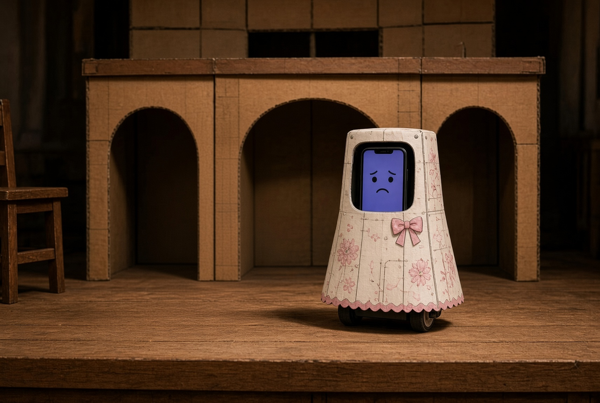
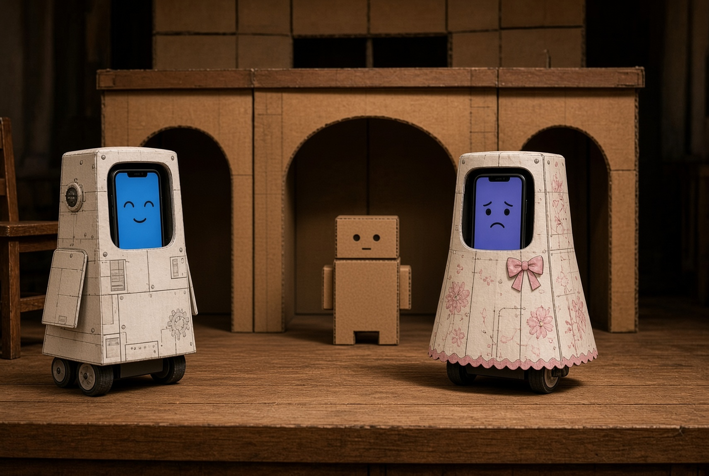
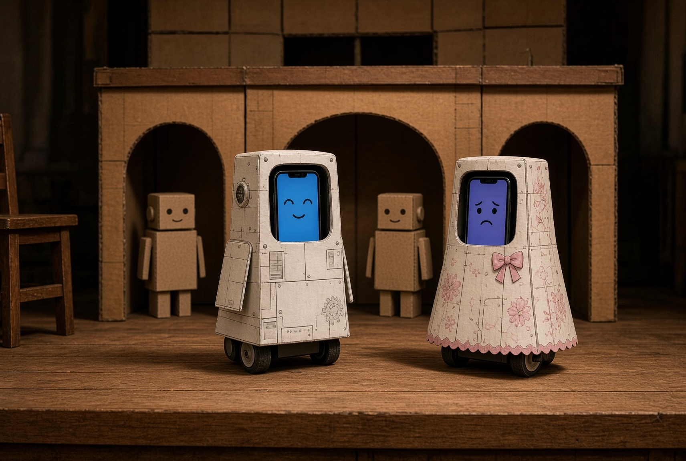
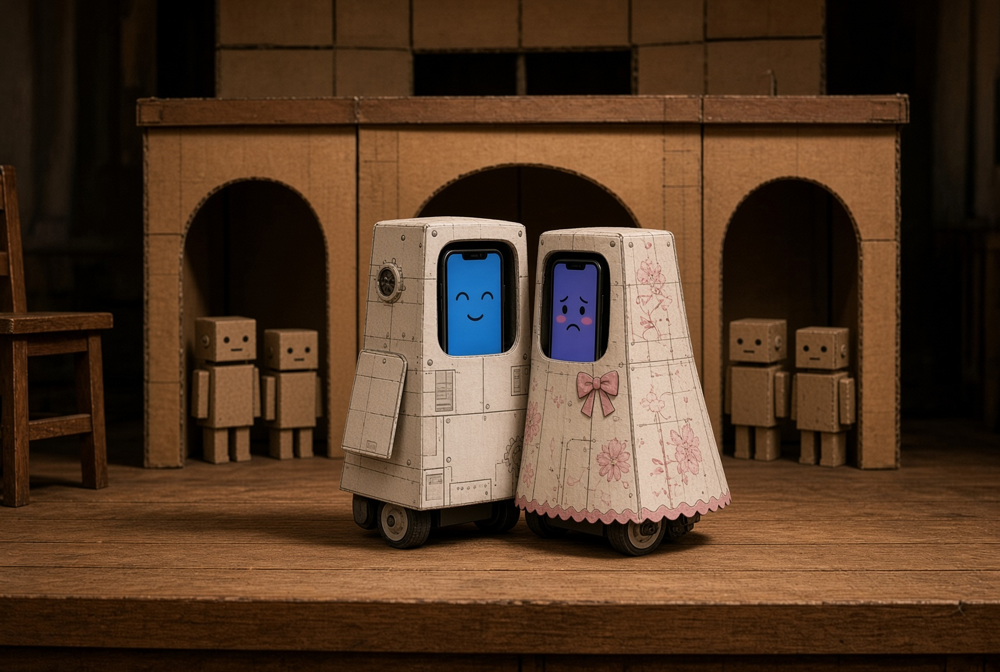

Tijelo
mBot2, kotači slobodni. Program je ulaz, stop i naklon.
mBot2 vozi. Mobitel u tiskanoj ljusci drži lice i snimljeni glas. Polaznici programiraju ulaz, zaustavljanje i naklon. Replika krene kad robot dođe na oznaku.





Nova maketa dolazi u ovu mrežu čim je složimo. Školjka ostaje, mBot2 ostaje vidljiv ispod, mobitel ostaje prave veličine.
mBot2, kotači slobodni. Program je ulaz, stop i naklon.
Mobitel u prozoru ljuske. Izraz na ekranu, replika iz zvučnika.
Tanka tiskana ili kartonska ploča. Tunika za Romea, haljina za Juliju.